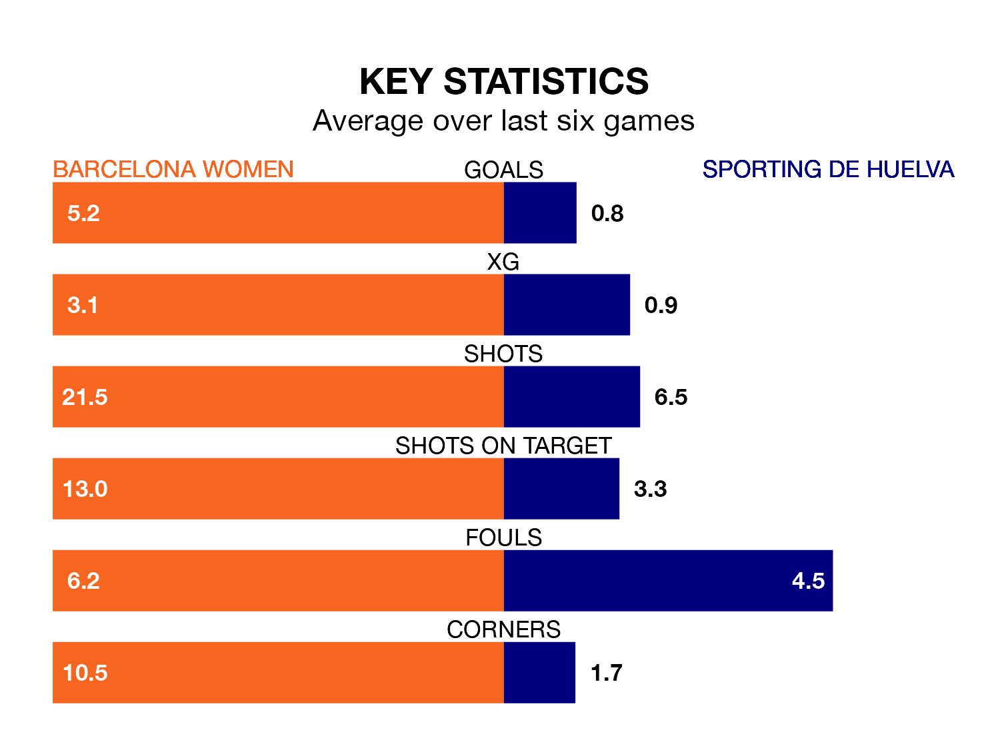

Mid-season relegation candidates Sporting de Huelva face a challenge away against high-flying Barcelona Women at Estadi Johan Cruyff on Sunday.
Sporting de Huelva are rooted to the bottom of the Primera Division Women table, and have picked up just one win and one draw in their 15 games to date.
Barcelona, meanwhile, are top of the standings with 42 points, having won 14 and drawn none of their first 14 matches.
With 65 goals in 14 games so far this season, Barcelona are the league's highest scorers with 4.6 goals per game. And they are conceding fewer than average, letting in three goals at a rate of 0.2 per game.
Sporting, meanwhile, are below average scorers, with 0.6 goals per game, compared to a league average of 1.6. They have conceded 2.1 goals per game.
The hosts are in exceptional form in Primera Division Women, with six wins and no losses from their last six games.
With a win and five losses over that period, the away side's form is much worse – they have taken three points from 18, compared to Barcelona's 18.
In Caroline Graham Hansen, Barcelona have the league's sharpest shooter so far this season. She has notched 12 goals in 12 appearances.
Her goal rate of one every 75 minutes is much quicker than that of Laia Balleste, Sporting's top scorer with a goal every 361 minutes, and a total of three goals in 13 games.
In the last 10 years, Barcelona and Sporting have played each other on 20 occasions. Barcelona won 16 of them, Sporting two, and they drew twice.
On average, Barcelona scored 3.4 goals and Sporting 0.6 in those matches.
Their last meeting was on October 1, when Barcelona won 2-1 away.
Barcelona's last match was on January 28, a 6-0 win against Real Betis Women, with Graham Hansen (two), Aitana Bonmati Conca, Bruna Vilamala Costa, Esmee Brugts and Victoria López getting the goals for Barcelona.
Sporting lost 1-0 against Villarreal Women last time out, on January 27.
Updated: 09:21 (UTC), 30/01/24